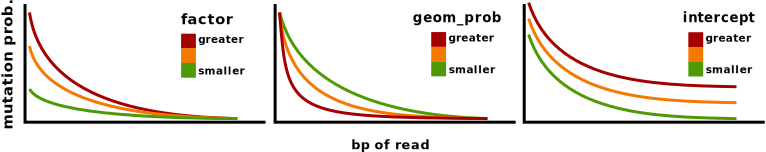
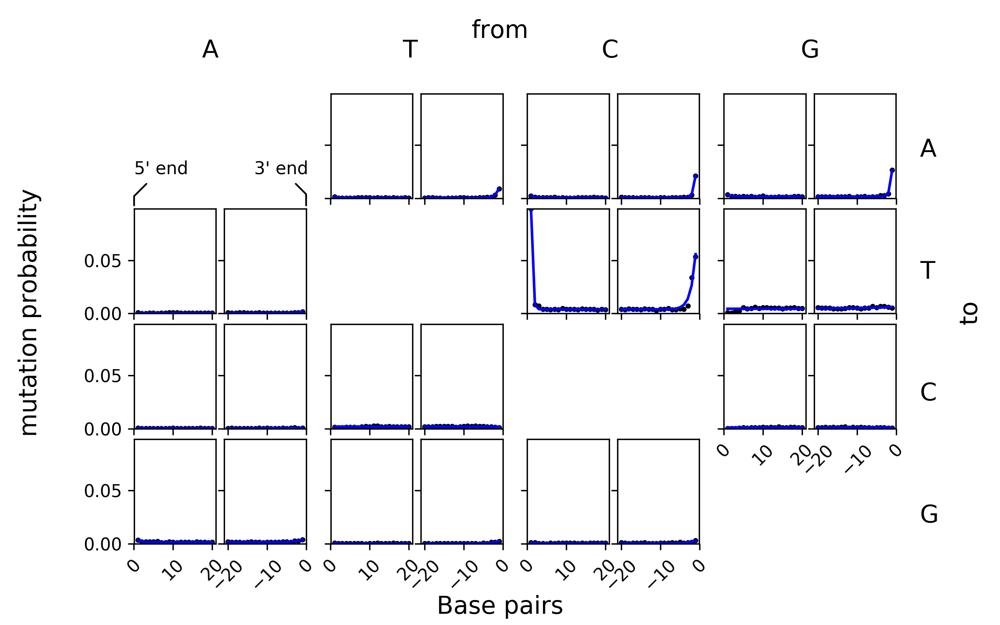

Mutations must be introduced into the artificial reads in order to simulate chemical damage and evolutionary distance of ancient DNA with respect to the recent reference which they shall be mapped to.
As chemical damage is more prevalent near the end of ancient DNA, TAPAS can introduce more mutations into the artificial reads, near their ends. To this effect parameters must be determined, which affect the probability of each base exchange for each position in the read.
The mutation probability parameters are detailed in the next section. Following that, the section Specifying the parameters shows how values for the mutation probability parameters can be set by the user. Afterwards, in Subject-a-FASTQ-file-to-artificial-mutations, the FASTQ file containing artificial endogenous reads, which was generated in the previous topic, is subjected to mutations with the specified base exchange probabilities.
This chapter closes with two advanced topics: Obtaining mutation probability parameters from a mapDamage output and how to define multiple sets of mutation probability parameters to create multiple FASTQ files containing reads of different mutation strengths.
The reads are mutated using per base probabilities derived from the geometric distribution. The mutation probability at the read ends is the highest. By this, the chemical damage near read ends can be modelled. For this, three parameters are important:
The position-independent mutation probability \(t\) (\(0<t<1\)). This is the probability of any base to mutate, regardless of its proximity to the end of the read. This can be used to model evolutionary distance.
The steepness \(p\) (\(0<p<1\)) of the mutation probability decline when moving away from the read end. The higher this parameter the steeper is the decline of mutation probability when moving away from the read end.
The multiplying factor \(f\). At the read end, \(p\cdot f+t\) is the probability of the first base of the read to be mutated.
With this model, its possible to archive mutation probabilities greater than one. This makes of course no sense and the mutation probability is cut back to one in such cases.
In mathematical notation, the mutation probability \(P_{\text{mut}}\) of a base number \(x\), starting to count at the reads' end, is:
\[P_{\text{mut}}(x) = f \cdot \text{dgeom}(x;p) + t\]
with \(\text{dgeom}(X;P)\) being the density function of the geometric distribution, with parameters X = number of tries; P = success probability.
The following sketch graphs illustrate the three parameters:

The mutation probabilities are saved as a text table. It looks like this:
cat input/mut-tables/mut.tabstrand from to factor geom_prob intercept
3p C T 0.3 0.4 0.1
5p C T 0.1 0.2 0.0
3p * * 0.0 0.1 0.12Two types of per-base mutation probabilities are distinguished:
The columns have the following meaning:
3 and one with a value 5.*] Which bases should mutate according to this lines' parameters. The character * means this line applies to every base.*] Which base should a mutation event yield. * means a base (A,T,C,G) different from the original base is chosen at random.strand)For each row of the table, the read is subjected to one round of mutation introduction where the mutation probability per base is determined by the parameters found in that row.
The multiple-mutate.py tool takes a table of the previous section as input and mutates raw nucleotide strings provided to it on standard input accordingly.
An already existent FASTQ file can be mutated using the filter_fastq tool in cooperation with multiple-mutate. The tool filter_fastq enables you to apply transformations to existing fastq files. To this effect, filter_fastq extracts one part out of a FASTQ file (read name, nucleotide string or quality string) and feeds it into another sub-program specified between two @-signs. The sub-program is required to take lines of text as input and return the same number of lines on standard output. The output of the sub-program is then placed into the output fastq file. By combining filter_fastq and multiple_mutate, the tool which applies mutations to strings of nucleotides, a FASTQ file can be mutated. The --seed can be set to an arbitrary value to generate a reproducable result.
scripts/filter_fastq --nucleotide \
@ scripts/multiple_mutate --seed 123 input/mut-tables/mut.tab @ \
< data/2/volpertinger.fastq \
> data/3/volpertinger_mut.fastqNote how the nucleotide strings of the output FASTQ file now carry mutations (lower-case letters):
head data/3/volpertinger_mut.fastq@volpertinger_1
cTcTAaAAGATAgTAGCCAATCAGATCCA
+
FFFFFFFFFFFFFFFFFFFFFFFFFFFFF
@volpertinger_2
TCTAcTTAATAgTTTCTCCC
+
FFFFFFFFFFFFFFFFFFFF
@volpertinger_3
TcGgACTTTATCTTCCGccGCTCAACThe filter_fastq.py script enables you to apply an arbitrary script or program on just one part of a FASTQ file (ID line, nucleotide line, quality line). The used script must accept the respective part on standard input and print the modified version on standard output. The modified FASTQ file is assembled by filter_fastq.py from the output of its children scripts and printed on standard output.
On the filter_fastq.py call, the @ sign serves as a sentinel character, which determines start and end of the sub-program's command line. It can also be any arbitrary other character, as long as it doesn't occur inside the child script's command line but only at the beginning and the end.
In this example, the endogenous reads from volpertinger undergo simulated mutation and damage prior to mapping, while the contaminant reads from R. etli do not.
Therefore only now, after applying mutations to our volpertinger reads, is the time to combine the mutated sample reads and the contaminant reads generated in the last section to one file. For this purpose, the UNIX tool cat is used:
cat data/3/volpertinger_mut.fastq data/2/retli.fastq \
> data/3/all.fastqThe following two sections deal with advanced means of determining read mutation probabilities. They are not used in this tutorial, but may be used in custom workflows.
The subsequent section deals with how to read out mapDamage output to determine the read mutation probability parameters.
The section following that deals with how to create multiple distinct sets of read mutation probabilty parameters. By that means, different read sets can be created which were subjected to varying degrees of mutations. Therefore, mapper performance can be evaluated for different severities of read mutations.
Damage patterns from mapDamage can be converted into a table with mutation parameters by least-squares fitting. For this purpose, the mapDamage output file misincorporation.txt is needed.
The following command fits a geometric distribution to mapDamage data, shows the derived parameters and plots the data with the fitted curve.
The cut command is used only to limit the output to a width acceptable for this manual. Use the bash > redirection operator to write this output into a file suitable for multiple_mutate.py.
scripts/mapdamage2geomparam \
--fit-plots fig/fit.png \
input/mapdamage/misincorporation.txt | \
cut -f1-6 | \
column -tstrand from to factor geom_prob intercept
3p A C 0.002594 0.1289 0.0003363
3p A G 0.005872 0.3972 0.001542
3p A T 0.001393 0.7516 0.0006354
3p C A 0.02344 0.8742 0.0007693
3p C G 0.004381 0.4866 0.0006858
3p C T 0.09154 0.566 0.003878
3p G A 0.02789 0.8881 0.00169
3p G C 2.156e-07 0.1 0.001068
3p G T 0.01546 0.1008 0.004605
3p T A 0.01236 0.6896 0.0005899
3p T C 9.547e-07 0.1 0.001878
3p T G 0.005273 0.3866 0.000331
5p A C 0.0003257 1 NA
5p A G 0.003505 0.5183 NA
5p A T 7.02e-07 0.1 NA
5p C A 0.002157 0.8335 NA
5p C G 0.0009197 0.6883 NA
5p C T 0.09852 0.9541 NA
5p G A 0.002752 0.6784 NA
5p G C 4.612e-08 0.1 NA
5p G T 3.004e-07 0.1 NA
5p T A 0.001127 0.9989 NA
5p T C 2.849e-07 0.1 NA
5p T G 0.0007032 0.8024 NAFor each base exchange, the position-independent parameter intercept is only listed for one strand end.
This is the generated plot, which shows the mutation frequencies obtained from mapDamage (black dots) and the fitted mutation model (blue lines):

Sometimes, multiple damage patterns need to be compared. There is a possibility to generate the multiple_mutate input files from one table which lists all different values of the different mutation parameters.
This approach will be seen again later, where there is a possibility to generate many short read mapper calls from exactly the same kind of parameter table. You can therefore generate appropriate input files as well as appropriate short read mapper calls out of only one table which lists all the parameters.
The fill_template.py script expects a table, where each row is used to fill a prespecified template with values.
For example, if a template is written which looks like this:
cp input/mut-tmpl/mut-tmpl data/3
column -t data/3/mut-tmplstrand from to factor geom_prob intercept
5 C T {fac} {geom} 0
3 G A {fac} {geom} 0
3 * * 0 0 {all_intercept}... and another table is written which lists several values for the expressions in braces {...} from the previous file:
cp input/mut-tmpl/tab data/3/mut-tab
column -t data/3/mut-tabfac geom all_intercept
0 0.1 0
0 0.1 0.3
0.5 0.1 0
0.5 0.1 0.3... several files can be generated, where the brace-expressions are replaced by the values of the second table, using the fill_template script:
scripts/fill_template \
data/3/mut-tmpl \
< data/3/mut-tabstrand from to factor geom_prob intercept
5 C T 0 0.1 0
3 G A 0 0.1 0
3 * * 0 0 0
strand from to factor geom_prob intercept
5 C T 0 0.1 0
3 G A 0 0.1 0
3 * * 0 0 0.3
strand from to factor geom_prob intercept
5 C T 0.5 0.1 0
3 G A 0.5 0.1 0
3 * * 0 0 0
strand from to factor geom_prob intercept
5 C T 0.5 0.1 0
3 G A 0.5 0.1 0
3 * * 0 0 0.3
To write each table into its own file, the --output switch of the fill_template script can be used. The argument of --output can (and should!) contain column names of the table, again enclosed in braces {...}. This creates multiple files, where the braced expressions in the file names are replaced in the same way as they are in the table contents.
We will now write each of the tables shown above to its own file. We want to name the files using a counting number, but our input table doesn't yet contain a column with that counter. Therefore we must first add one.
The mentioned-above table can be prepended with an index column:
scripts/index_column --inplace data/3/mut-tab
head data/3/mut-tab | column -tindex fac geom all_intercept
0 0 0.1 0
1 0 0.1 0.3
2 0.5 0.1 0
3 0.5 0.1 0.3Now, each output of fill_template.py can be written to its own output file, using the information from the newly-generated index column:
scripts/fill_template \
--output "data/3/{index}_filled" \
data/3/mut-tmpl \
< data/3/mut-tab
# Show all the generated files
for f in data/3/*_filled; do
echo " === $f === "
column -t $f
done === data/3/0_filled ===
strand from to factor geom_prob intercept
5 C T 0 0.1 0
3 G A 0 0.1 0
3 * * 0 0 0
=== data/3/1_filled ===
strand from to factor geom_prob intercept
5 C T 0 0.1 0
3 G A 0 0.1 0
3 * * 0 0 0.3
=== data/3/2_filled ===
strand from to factor geom_prob intercept
5 C T 0.5 0.1 0
3 G A 0.5 0.1 0
3 * * 0 0 0
=== data/3/3_filled ===
strand from to factor geom_prob intercept
5 C T 0.5 0.1 0
3 G A 0.5 0.1 0
3 * * 0 0 0.3If several combinations of mutation parameters shall be tested, cross_tab.py can be used to generate a table like data/3/mut-tab from predefined parameter values, like described with mapper parameters in the next chapter.